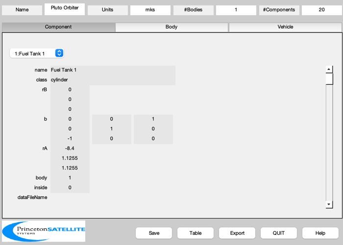
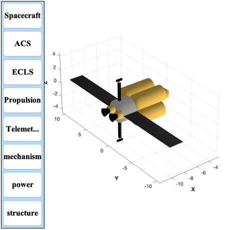

Generate Direct Fusion Drive (DFD) Pluto Orbiter CAD model
You can change parameters to resize the vehicle. The fuel masses and powers are loaded from PlutoSpacecraftData.mat
Contents
%-------------------------------------------------------------------------- % Copyright (c) 2015 Princeton Satellite Systems, Inc. % All Rights Reserved. %-------------------------------------------------------------------------- % Since 2016.1 %-------------------------------------------------------------------------- % The launch vehicle shroud is 5080 mm by 6096 + 7665
Script controls
exportCAD = 1; addLander = 0;
Data from PlutoDFDMission
qSC = load('PlutoSpacecraftData');
Spacecraft parameters
lengthCylTrans = 2; radiusCylTrans = 1.5; massCylTrans = 200; xAntenna = -10; power = 1e6; % Fusion engine %-------------- rEngine = 0.55; lEngine = 12*(power/1e7)*rEngine; lNozzle = 0.8; nEngines = 2; % http://www.nasaspaceflight.com/2012/04/delving-deeper-dsh-configurations-support-craft/ massHab = 1000; % DSH Configuraton (kg) eta = 0.58; fS = 0.02; % kg/kg fuel tank/fuel % Radiator radiatorArealMass = 2.75; tempRadiator = 625; tRadiator = 0.1; massTruss = 20; lengthTruss = 3; % Fuel tanks nTank = 4; lTank = 3.5; fInsulation = 1.2; % Insulation thickness is 20% of tank densityD = 162.4; % kg/m^3 nTankPerRow = 1; tankSpacing = lTank/100; densityHe3 = 0.1785;%kg/m^3 volHe3 = qSC.massHe3/densityHe3;%m^3
Mass calculations
massEngine = qSC.power/(1000*qSC.specPower); massTotalSeg(5) = massEngine + massHab; volFuel = qSC.massFuel/densityD; clear s % Build the CAD model BuildCADModel( 'initialize' ); BuildCADModel( 'set name' , 'Pluto Orbiter' ); BuildCADModel( 'set units', 'mks' ); m = CreateBody( 'make', 'name', 'Core' ); BuildCADModel('add body', m ); BuildCADModel( 'compute paths' ); if( addLander ) BuildCADModel( 'add subassembly', 'PlutoLander', 1, [-2.25;0;0], [0 0 1;0 1 0; -1 0 0] ); end % Add the fuel tanks rTank = sqrt(sum(volFuel)/nTank/lTank/pi); % Add insulation rTank = fInsulation*rTank; lTank = fInsulation*lTank; massTank = (1+fS)*qSC.massFuel/(nTank*nTankPerRow); ang = pi/4; b = [0 0 1;0 1 0;-1 0 0]; lT = lTank/nTankPerRow; xTank = -4.2 - lTank; for j = 1:nTankPerRow for k = 1:nTank y = 1.5*rTank*cos(ang); z = 1.5*rTank*sin(ang); ang = ang + pi/2; rA = [xTank;y;z]; name = sprintf('Fuel Tank %d',k); m = CreateComponent( 'make', 'cylinder', 'rUpper', rTank, 'rLower', rTank, 'h', lT, 'n', 20, 'b', b, ... 'faceColor', 'gold foil','inside',0, 'rA', rA, 'mass', massTank, 'name', name, 'body', 1 ); BuildCADModel( 'add component', m ); end xTank = xTank + lT + tankSpacing; end xTank = -4.2 - lTank; xTrans = xTank - lengthCylTrans; m = CreateComponent( 'make', 'cylinder', 'rUpper', radiusCylTrans, 'rLower', radiusCylTrans, 'h', lengthCylTrans, 'n', 20, 'b', b, ... 'faceColor', 'aluminum','inside',0, 'rA', [xTrans;0;0], 'mass', massCylTrans, 'name', 'Transition', 'body', 1 ); BuildCADModel( 'add component', m ); % Add He3 Tank rHTank = rTank*((1/cos(pi/4))-1)-0.1; lHTank = volHe3/(pi*((rHTank/fInsulation)^2)); lHTank = lHTank*fInsulation; bH = [0 0 1;0 1 0;-1 0 0]; xHTank = -4.2 - lHTank; rAH = [xHTank;0;0]; massTankH=1; nameH = sprintf('He3 Fuel Tank %d',k); m = CreateComponent( 'make', 'cylinder', 'rUpper', rHTank, 'rLower', rHTank, 'h', lHTank, 'n', 20, 'b', bH, ... 'faceColor', 'gold foil','inside',0, 'rA', rAH, 'mass', massTankH, 'name', nameH, 'body', 1 ); BuildCADModel( 'add component', m ); % Add Engines %------------ massNozzle = 0.05*massEngine; massEngine = 0.95*massEngine; xEngine = xTrans - lEngine; xNozzle = xEngine - lNozzle; yEngine = 1.5*rEngine*[1 -1]; for k = 1:nEngines rA = [xEngine;yEngine(k);0]; name = sprintf('Engine %d',k); m = CreateComponent( 'make', 'cylinder', 'rUpper', rEngine, 'rLower', rEngine, 'h', lEngine, 'n', 20, 'b', b, ... 'faceColor', 'gold foil','inside',0, 'rA', rA, 'mass', massEngine, 'name', name, 'body', 1 ); BuildCADModel( 'add component', m ); rA = [xNozzle;yEngine(k);0]; name = sprintf('Magnetic Nozzle %d',k); m = CreateComponent( 'make', 'cylinder', 'rUpper', 0.5*rEngine, 'rLower', rEngine, 'h', lNozzle, 'n', 20, 'b', b, ... 'faceColor', 'black','inside',0, 'rA', rA, 'mass', massNozzle, 'name', name, 'body', 1 ); BuildCADModel( 'add component', m ); end % Add Radiators %-------------- heatRadiatedPerSide = (1-eta)*qSC.power/4; % for one radiator side sigma = 5.67e-8; area = heatRadiatedPerSide/(sigma*tempRadiator^4); xWidth = lengthCylTrans; yWidth = area/xWidth; massRadiator = radiatorArealMass*area; q = 1; for k = 1:2 name = sprintf('Radiator %d',k); rA = [xTrans + 0.5*lengthCylTrans;q*(radiusCylTrans+lengthTruss);0]; m = CreateComponent( 'make', 'box', 'x', xWidth, 'y', yWidth, 'z', tRadiator, ... 'faceColor', 'radiator','inside',0, 'rA', rA, 'mass', massRadiator, 'name', name, 'body', 1 ); BuildCADModel( 'add component', m ); q = -q; end % Optical communications system rhoTruss = 409.7/4.55^2; mGimbal = 7.5; massAntenna = 2; bA = [0 0 1;0 1 0;-1 0 0]; [v, f, l] = Truss( [0;0;0], [4;0;0], 0.25, 10, 0.025 ); massTruss = 10; lTruss = 5; lBase = lTruss/2 + radiusCylTrans; % DOCS 1 m = CreateComponent( 'make', 'generic', 'vertex', v, 'face', f, 'edgeColor','truss', 'rA', [xAntenna;0;lBase],... 'name', 'Antenna Truss', 'body', 1, 'b',bA, 'mass',massTruss,... 'faceColor', 'gold foil', 'inside', 0); BuildCADModel( 'add component', m ); m = CreateComponent( 'make', 'cylinder', 'rUpper', 0.1, 'rLower',0.1, 'h', 0.2, 'n',12, 'rA', [xAntenna;0;lBase],... 'name', 'Antenna Azimuth Gimbal', 'body', 1, 'mass', mGimbal/2, ... 'faceColor', 'gold foil', 'inside', 0); BuildCADModel( 'add component', m ); m = CreateComponent( 'make', 'cylinder', 'rUpper', 0.15, 'rLower',0.15, 'h', 0.8, 'edgeColor','black','b',b,... 'name', 'DOCS1', 'body', 1, 'faceColor', 'black','inside', 0,'mass',massAntenna,... 'rA',[xAntenna-0.4;0;lBase+0.4] ); BuildCADModel( 'add component', m ); % DOCS 2 bA = [0 0 -1;0 1 0;1 0 0]; m = CreateComponent( 'make', 'generic', 'vertex', v, 'face', f, 'edgeColor','truss', 'rA', [xAntenna;0;-lBase],... 'name', 'Antenna Truss', 'body', 1, 'b',bA, 'mass',massTruss,... 'faceColor', 'gold foil', 'inside', 0); BuildCADModel( 'add component', m ); m = CreateComponent( 'make', 'cylinder', 'rUpper', 0.1, 'rLower',0.1, 'h', 0.2, 'n',12, 'rA', [xAntenna;0;-lBase-0.2],... 'name', 'Antenna Azimuth Gimbal', 'body', 1, 'mass', mGimbal/2, ... 'faceColor', 'gold foil', 'inside', 0); BuildCADModel( 'add component', m ); m = CreateComponent( 'make', 'cylinder', 'rUpper', 0.15, 'rLower',0.15, 'h', 0.8, 'edgeColor','black','b',b,... 'name', 'DOCS2', 'body', 1, 'faceColor', 'black','inside', 0,'mass',massAntenna,... 'rA',[xAntenna-0.4;0;-lBase-0.4] ); BuildCADModel( 'add component', m ); % Add truss %---------- xBottom = [xTank;0;0]; xTop = [xTank+1.2*lTank;0;0]; [v, f] = Truss( xBottom,xTop, rTank, 8, 0.01*rTank ); c = cos(pi/4); v = ([1 0 0;0 c c;0 -c c]*v')'; m = CreateComponent( 'make', 'generic', 'vertex', v, 'face', f,'edgeColor', 'truss' ,'rA',[0;0;0],... 'name', 'Truss', 'body', 1, 'faceColor', [0.8 0.1 0.2],'inside', 1 ); BuildCADModel( 'add component', m ); % Add payload m = CreateComponent( 'make', 'box', 'x', 1, 'y', 1, 'z', 1,'faceColor', 'gold foil','inside',0, ... 'rA', [xTop(1)+0.5;0;0], 'mass', 500, 'name', 'Payload', 'body', 1 ); BuildCADModel( 'add component', m );
Create mass budget
Add subsystems
BuildCADModel( 'add subsystem', 'ACS', {'star camera','rwa' 'torquer'} ); BuildCADModel( 'add subsystem', 'ECLS', {'habitat'} ); BuildCADModel( 'add subsystem', 'Propulsion', {'engine' 'fuel' 'radiator' 'nozzle'} ); BuildCADModel( 'add subsystem', 'Telemetry and Command', {'antenna', 'board'} ); BuildCADModel( 'add subsystem', 'mechanism', {'drive'} ); BuildCADModel( 'add subsystem', 'power', {'solar array', 'battery'} ); BuildCADModel( 'add subsystem', 'structure', {'support', 'frame', 'strut', 'panel'} );
Update the mass properties to produce the tables
BuildCADModel( 'update body mass properties' ); g = BuildCADModel( 'get model'); BuildCADModel('show vehicle'); CreateReport( g, 'tex', FileFullpath('DFDPlutoMass'), 'mass', 1, 1, 1 );
Export
if( exportCAD ) ExportOBJ( g, FileFullpath('PlutoOrbiter') ); end %-------------------------------------- % PSS internal file version information %-------------------------------------- % $Id: 18a587919fa20195b9893eba810fb7908d5b3af0 $